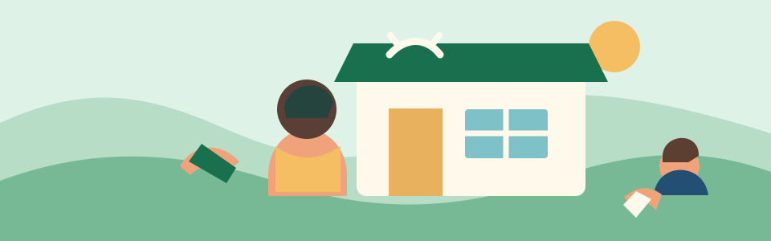

Practice today
0/ 3 phrases
Cebuano for everyday life
Learn practical Cebuano phrases through short, friendly moments—ordering food, asking for help, greeting family, and getting around.

Start a 3-minute lessonYour dashboard
Practice today
0/ 3 phrases
Saved for later
0phrasesPhrasebook
250ready to exploreQuick review
Save phrases to revisitChoose a moment
Daily practice
Tap “Next” to work through a focused mini lesson.
At a small café
Palihog, usa ka kape.
“One coffee, please.”
pah-lee-HOG, OO-sa ka KAH-peh
Phrasebook
250 phrases